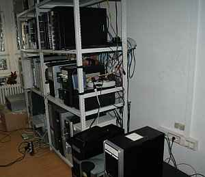

Figyelem! Az asva.info valótlanul terjeszti, hogy ez az interjú
hamisítvány. Természetesen nem az, Skype-on keresztül készült, és megvan róla a hangfelvétel. Az
asva.info névtelen szerkesztőinek hitelrontó állításaival a továbbiakban nem kívánunk
foglalkozni.
A cím nem egyszerű
szenzációhajhászásból született. Kovács Balázst, azaz Baját jelenleg több titkosszolgálat, több
ország rendőrsége és az Interpol is keresi, miután sikerült kicsúsznia a hatalmas erőkkel
végrehajtott budapesti razzia után a Nemzeti Nyomozó Iroda markából, és elhagynia az
országot. Üzlettársait, több, mint egy tucat személyt előzetes letartóztatásba helyezték
szerzői és szomszédos jogok megsértése miatt, miután a rendőrség lerohanta és pincétől
padlásig átkutatta a Kileen Kazakhstan - korábban ColdFusion Kft - Victor Hugo utcai
telephelyét, ahol a jelentések szerint hatalmas warezszerver-hálózat működött. Az
ASVA győzelmi jelentése
szerint Bajáék 365 millió forint kárt okoztak különféle kiadóknak az emelt díjas SMS-ért
árusított szoftverek, filmek és zenei tartalmak illegális kereskedelmével. Ilyen hatalmas
fogásra nemhogy Magyarországon, de az egész világon kevés példa volt ezidáig.
Internetes körökben a ColdFusion
Magyarország Kft-nek - röviden CFM - finoman szólva nem volt töretlen a jó híre.
Kéretlen reklámlevelek milliárdos nagyságrendű terjesztésével, felhasználók lehúzásával
vádolták őket mindenfelé keringő pletykák. A Spamwikin
külön
szócikk foglalkozik az 1999-ben alapított informatikai céggel, közölve, hogy számos
spamben hirdetett cég weboldala a ColdFusion tárhelyén található, s 2008-ban a Spamwiki
szégyenfalára került magyar spamek 18%-a a CFM hálózatából származott. Ugyanakkor szintén
köztudott, hogy Kovács Balázs gyakran dolgozott a rendőrségnek és a Nemzeti Nyomozó
Irodának informatikai szakértőként.
Április 14-én a ColdFusion irodáiban rendőrök
jelentek meg. Minden számítógépet összecsomagoltak, mindenkit letartóztattak, majd a cég
munkatársainak és egyes üzletfeleinek otthonában is házkutatást tartottak. Az elfogott
személyeket kivétel nélkül előzetes letartóztatásba helyezték, ami példátlan a hasonló
intézkedések történetében Magyarországon. Úgy látszott, a hatóságok valamiért különösen
komolyan veszik a ColdFusion-ügyet.
Egy kalandos menekülés története
- Konkrétan Siófokon
voltam, amikor történtek az események - kezdi a razzia történetét. - Azok a cikkek, amik
kikerültek az Indexre, meg az asva.hu-ra, meg mindenféle fasza oldalakra, baromságok.
Semmit nem tudnak semmiről, csak találgatnak. Ilyeneket írtak, hogy kirakatembereket
fogtak el, meg ilyen faszságokat.
- Mi
történt?- Akikhez kimentek, azoknál kommandósok törték be az ajtót.
Norbertkánál (
Wellinger Norbert) otthon voltak a
szülei. Csengettek, azok odamentek, hogy ki az, és durr, az arcukba rúgták az ajtót. Így,
ilyen szinten.
- Ezt így szokás. Engem is így
vittek el 2006-ban.- Onnan tudtam, hogy nagy gáz
van, hogy hat embert hívtam fel, és a hatból hat nem válaszolt. Akkor már lehetett tudni,
hogy para van. Hozzá kell tegyem, mindenki azt mondja, hogy ez a Nemzeti Nyomozó Iroda
másfél éves nyomozása, meg sikere, estébé, estébé, hát ez nem így van. Az NNI három vagy
négy nappal előtte kezdett el nyomozni. Az Interpol foglalkozott az üggyel, többek
között azért, mert az egyik ügyfelünk - nem mondom, hogy ki, de szerintem úgyis rá lehet
jönni a Google-lal - a Teamburg nevezetű orosz szexlapnak megcsinálta a magyar
klónváltozatát. Ezen voltak olyan képek - állítólag - amelyek gyerekpornográfiához
vezettek. Igaz, a Teamburgon ki volt írva, hogy a modellek mind 18 éven felüliek, de
valami igazságügyi szakértő, aki ebben nyilván nagyon jártas, megállapította, hogy
néhány lány a képeken még nincs 18 éves. Nem tudom, miből, talán a melle méretéből? Nos,
innen indult az egész. Két nappal a budapesti razzia előtt már bekopogott az Interpol az
egyik ukrajnai cégünkhöz. El is vittek két embert. Két nappal később Magyarországon is
ugyanez történt, csak nagyobb volumenben.
- Tehát
alapvetően gyerekpornót kerestek, nem warezt?-
Magyarországon már warezt is kerestek, meg mindent, ami eszükbe jutott, de mondom, ezt az
egészet az Interpol indította, teljesen mást keresve. A Nemzeti Nyomozó Iroda vitte el az
egészet más irányba, azt állítva, hogy itt warez van, meg SMS-web, meg minden kurvaanyja.
De ez már ilyen hozzátett dolog.
- Gondolom, a
híradásokban azért nem szerepel gyerekpornó-anyagok lefoglalása, mert nem is találtak
ilyesmit.- A Nemzeti Nyomozó Iroda jóvoltából
betekintésem van az iratokba. Ennek ők biztos nem örülnek, de az ő bajuk. Hetente kapok
egy
news update-et. A mai napig nincs olyan az
iratokban, hogy gyermekpornográfia lenne bármelyik lefoglalt gépen. Egyébként röhej ez is.
Ha elmegy ma az ember a Bank diszkóba vagy hasonló helyre, és körülnéz, milyen csajok
vannak ott, hát azok is húsz-huszonkét évesnek néznek ki, közben tizenkét-tizennégy
évesek. Erre mit mondana a szakértő? Teljesen szubjektív annak a megítélése, hogy ki hogy
néz ki, erre nem lehet vádakat alapozni. Nem egy tizenöt éves lányról elmondható, hogy
húszévesnek néz ki, de fordítva is van erre példa. A "gyerekpornónál" nem arra kell
gondolni, hogy két-három éves babákat fotóznak meztelenül, vagy megerőszakolják őket.
Ilyen nincs. Kábé olyanról van szó, hogy van esetleg egy 17 éves lány, akiről nem lehet
megmondani ránézésre, hogy csak annyi. Az a durva gyermekpornográfia, amit a média sugall,
nem is létezik. Ilyennel abszolút senki nem foglalkozik. Ez egyszerűen pornó, amiről nem
lehet megállapítani, hogy a "teen" kategóriának melyik részét képviseli.
- Hogyan kerültél Siófokról Budapestre, honnan tudtad meg, hogy nagy
baj van?- Siófokon aludtam egy wellness-szállodában,
egy lány társaságában. (Már elmúlt tizennyolc, mielőtt valaki megkérdezi.) Gyakran járok
ebbe a szállodába. Reggel hét órakor meg nem nevezett rendőrségi forrásból -
értelemszerűen nem fogom megnevezni, mert ellentétben az NNI-vel, én nem fogok rendőr
kollégákat belekeverni az ügybe, amit az NNI a közreműködésem nélkül is megtett,
gratulálok hozzá - azt a bizalmas információt kaptam, hogy probléma van. Elég nagy
probléma, jó lenne, ha intézkednék. Ennyi volt a telefonhívás, és még egy javaslat, hogy
a telefonomat mostantól ne igazán használjam. Pár hónapja sikerült vásárolnom az
Interneten egy liechtensteini SIM kártyát, ami nagyon jó, mert tudtommal nemigen lehet
lehallgatni, ezt tettem a készülékbe a régi helyett. Ezen elkezdtem kommunikálni,
elkezdtem felhívni embereket, hogy mégis, mi történt, mert a rendőrségi forrás csak ennyit
mondott, semmi érdemi infót nem adott. Először a szervertermet próbáltam, az ott
dolgozókat, de nem vették fel. Próbáltam a rendszergazdákat, nem vették fel, a volt
üzlettársamat, az se vette fel. Megpróbáltam Norbertkát felhívni, ő se vette fel... és a
sokadik ilyen után gyanús volt, hogy senki nem veszi fel a telefont. Jó, hogy reggel hét óra
volt, és nem sok informatikusra jellemző, hogy ilyenkor fent legyen, de ez akkor is
gyanús volt. Valakinek azért csak jelentkeznie kellett volna, de
nem.
Megpróbáltam felhívni Norbertka szüleit vezetékes telefonon. Ők felvették, de ez
is érdekes, hiszen egy kommandósokkal végrehajtott házkutatási-lefoglalási eljárás
közepén hogy tudták felvenni? De felvették, és mondták, hogy ott vannak a rendőrök, és épp
intézkednek, berúgták az ajtót, Norbertkát bilincsbe verték. Feri szüleit is sikerült
elérnem, ők is ugyanezt közölték: kommandósok berúgták az ajtót, Ferit elvitték, az
autóját, a számítógépét is. Egy másik barátomnál, akit kivételesen estére elengedtek, az
ADSL modemtől kezdve a húga Nintendójáig mindent lefoglaltak. A délelőtti házkutatás
után azonban kijött délután egy másik brigád, és közölték a szüleivel, hogy adják elő az
elrejtett pénzt, mert különben mindent szétbasznak, széttörik a bútorokat, őket nem
érdekli semmi. Minden pénzt odaadtak nekik, ami volt otthon, és azt is lefoglalták. Hogy
ez legális vagy nem legális, nem tudom, de elég durva volt. Összesen kilenc embert
vittek be, ebből hatot tartanak bent jelen pillanatban is.
Kezdett kristályosodni,
hogy itt valami kurva nagy gáz van, hiszen mindenkit, akivel valaha dolgoztam, üzleteltem,
barátkoztam vagy szorosabb kapcsolatot ápoltam, bevittek. Értelemszerűen mit csinál az
ember ilyenkor? Ha nem szeretne bent ülni előzetesben, akkor menekül. Hát én beültem az
autómba - egy M6-os BMW-vel voltam éppen - és téptem haza. Elég nagy sebességgel jöttem az
M7-esen. Budapesttől valami tíz kilométerre állt az út szélén egy rendőrségi Skoda
Octavia. Le volt húzva a vezetőoldali ablak, folyamatosan figyelték az elhaladókat.
Gondoltam, hogy nagy valószínűséggel engem keresnek. Lelassítottam százhúszra, szépen
betartva a szabályokat haladtam el mellettük, és reméltem, hogy csak parázom, hiszen
ilyenkor az ember nehezen szabadul a gondolattól, hogy mindenki őt keresi, mindenki őt
nézi. Egyszer csak látom, hogy a rendőr felkapcsolja a villogót, és utánam ered. Tényleg
engem várt. Rákapcsoltam, és mondanom sem kell, a BMW-vel kettő percbe sem telt, hogy soha
ne lássam többet.
Az M7-esről lehajtva Gazdagréten mentem keresztül, ahol
Norbertkáék lakására rá tudtam pillantani. Láttam ott a rendőrautókat, éppen pakolták be
a számítógépeit. Nem álltam meg, nem tudom, láttak-e engem. A hegyen keresztül Pestre
hajtottam, a Visegrádi utcai lakásomhoz. Azt hittem, már ott is biztosan várnak. Az
autót a Lehel téri templomnál parkoltam le, odasétáltam, alaposan körülnéztem, de
meglepetésemre nem volt ott senki. Felmentem a lakásba, ott sem volt senki. Először azt
hittem, már elmentek, de aztán rájöttem, hogy az nem lehet, mert riasztó van, és a
riasztótársaság azonnal telefonált volna, ha valaki behatol a lakásba. Simán bementem.
Magamhoz vettem pénzt, iratokat, ruhákat, mindent, ami szükséges, visszasétáltam a
kocsihoz. Mondanom sem kell, ez a lakás alig száz méterre van az irodától. Ott mentem el a
sok villogó rendőrautó meg a bután bambuló sünök mellett, míg ezek odafent éppen
széttúrták az irodámat, hordták le a szervereket. Jól van, pakoljatok csak, fiúk, csá...
Visszamentem az autóhoz, hazavittem a csajt, majd kivittem az összes kocsimat egy
autópiacra és eladtam. Csak egyet tartottam meg, amelyikről valószínűleg kevés tudomása
volt bárkinek is, beszálltam, és elhagytam vele az országot. A határnál semmi nem volt, a
magyar okmányaimmal simán kimentem, senki nem kérdezett semmit. Először paráztam, hátha
köröznek vagy valami, de nem volt semmi. Két határon és a schengenin is problémamentesen
átjutottam. Lehúztam jó pár ezer kilométert, míg eljutottam ide, semmi gáz nem
volt.
- De miért pont Kirgizisztánba?- Mert nincs kiadatási egyezménye Magyarországgal, és ha van
pénzed, ez egy nagyon kedves ország.
Rendőrségi furcsaságok- Szerinted hogy lehet az,
hogy nem vagy rajta sem a magyarországi belföldi, sem a schengeni körözési listán, holott az
Interpol keres?- Nem tudom. Pedig a külföldi
bejelentett címeimen, három különböző országban már kerestek. Értelemszerűen ezek mind
fiktív lakcímek, soha az életben nem laktam ott, és nem is terveztem ott lakni, a cégekhez
kellettek. Voltak ott lerakva dolgaim, amikért el lehetett menni, ha baj van, és menni
tovább. Ezek erre voltak, semmi másra. A bérbeadók jelezték nekem e-mailben, hogy kerestek
ott.
- Lehetségesnek tartod, hogy a magyar
rendőrség nem tartja annyira fontosnak, hogy téged elkapjanak?- Én nem tudom, a magyar rendőrség mit tart fontosnak, és
mit nem. Hozzá kell tennem, hogy a magyar rendőrséggel nekünk alapvetően jó viszonyunk
volt. Sok ügyben közreműködtünk, mint szakértők, volt, hogy operatív nyomozásban is
részt vettünk. Az Internet most attól harsog, hogy jaj, mi egyszer szakértők voltunk egy
warezrazziánál. Igen, warezrazziánál tényleg csak egyszer, mert mi nem ilyen dolgokkal
foglalkoztunk. Sokkal nagyobb kaliberű témákban voltunk benne, amiről nem nagyon tud senki, de
ez nem is baj. A rendőrséggel nekünk alapvetően nagyon jó kapcsolatunk
volt. Igazság szerint nem tudom, miért nem vagyok rajta a
körözési listán.
- Mondanál
valamit ezekről az ügyekről, vagy ezek még mindig bizalmasak?- Ezek
nagyrészt bizalmas ügyek. A titoktartási szerződés értelemszerűen egy
gentlemen's agreement, de... hát, nem tudom, hogy ezek után
vonatkoznak-e rám ezek a szabályok. Igazából én a magyar "egyéniségemről" lemondtam, én
azt már soha többé nem fogom használni, tehát senki sem fog engem úgy megismerni, hogy
Kovács Balázs, magyar állampolgár. Tehát nem biztos, hogy ezek a titoktartási
szerződések még vonatkoznak rám. Ezen még gondolkodom. Alapvetően a Nemzeti Nyomozó
Iroda akarta magának ezt a szart, most akkor én megnézem, meddig mennek el
vele.
- Tehát magyarul azt üzened nekik, hogy ha
tovább szívóznak, esetleg kipakolsz ezekről az ügyekről, amelyekben rendőrségi
szakértőként részt vettél.- Így van. Egy tucat
ügyben részt vettünk, nagyon sok szakértésünk volt. Hozzá kell tennem, hogy milyen
érdekes dolgok vannak: azt mondják, hogy lefoglalták a CFM szervereit. Ez nem igaz, nem
foglaltak le egyetlenegy CFM-es szervert sem. Se a mailszerverünket, se a hosting
szerverünket, se a VMS szerverünket. Jó, a számlázó gépünket elvitték, oké. De példának
okáért volt egy "szakértői gépünk", amin az összes ilyen anyagot, rendőrségi ügyek aktáit,
minősített anyagokat tároltunk. Ez egy kódolt gép, nem a mi szervertermünkben volt, de
ott volt, megtalálhatták volna, ez volt ugyanis a másodlagos névszerverünk is. Ha
teljeskörű lett volna a lefoglalás, ezt is elvitték volna. De nem így történt, ez a gép
megvan. Miután pedig elhagytam az országot, erről a gépről távoli eléréssel mindent
leszedtem és letöröltem. Minden itt van a notebookomon, persze titkosítva. Folyamatban lévő
nyomozások, operatív megfigyelések adatai, sok minden, amiben benne voltunk. Olyan
dolgokban is, amelyekről papír sem született. Én nem az az ember vagyok, aki szeretne
nyomozásokat hátráltatni vagy ellehetetleníteni, de nem nagyon értem azt a problematikát
sem, hogy az egyik oldalon a hatóság kéri a segítségünket, a másik oldalon pedig
letartóztat mindenkit.
- Úgy tudom, olyan rendőröket is
belekevertek az ügybe, akik korábban munkakapcsolatot tartottak veled a nyomozásaik
során.- Igen, egy igazságügyi szakértő barátomat
is elővették, illetve jó néhány rendőrtisztet, akikkel együtt dolgoztunk - és
hozzáteszem, eredménnyel! - olyan ügyeken, mint gyermekpornográfia, különböző komoly
bűnszövetkezetek felderítése. Elmondom még egyszer, warez-ügyek nem voltak köztük. Most
mindenkinek az van az agyában, hogy a CFM egyenlő warez, a CFM titokban warezben utazott, és
közben informálta a rendőrséget, de ez nem igaz! Hozzáteszem, a warez-ügyeket soha senki
nem vette igazán komolyan. Soha olyan ítélet nem született, amikor valakit lecsukjanak,
vagy akárcsak előzetesbe rakjanak warez miatt, mint ebben az ügyben. Főleg úgy, hogy nem
is bizonyítható, hogy volt warez, mert SMS-webről beszélgetünk.
- Csak a laikusok kedvéért, mi az alapvető különbség az SMS-web és
egy warezszerver között? Az újságok azt írták, hogy warezszervereitek voltak, amelyekhez
emelt díjas SMS elküldése után lehetett hozzáférni, SMS-ért lehetett havi, heti tagságot
váltani.
- Warezszervernek a
klasszikus FTP-ket minősítjük. Ezek úgy működnek, hogy be kell fizetni valamennyi pénzt
egy bankszámlára, vagy elküldeni egy címre, tökmindegy, amiért kapsz egy jelszót, és
hajrá, töltsed. Ez a warezszerver. Épp ma olvastam az ASVA oldalán, hogy lefoglaltak egy
ilyet.
Az SMS-webet cégek üzemeltetik. A cég betesz egy gépet egy szerverfarmra,
amire lehet regisztrálni, és mindenki feltölthet rá, amit akar. Gyakorlatilag egy
ingyenes tárhelyszolgáltatás. Van egy védett tárhelyrész is, ahová olyan dolgokat lehet
feltenni, amit pénzért szeretnénk letöltésre kínálni. Ez egy üzleti tranzakció. A júzer
feltölti az anyagait. Aki akarja, emelt díjas SMS-ért letölti. Hó végén, elszámoláskor a
szervert üzemeltető cég, a katalizátor elszámol a júzerrel, áfás számla ellenében. A
katalizátor aztán maga is számláz a főkatalizátornak, az pedig a mobilszolgáltatóknak. Ez
abszolút nyomon követhető, legális tranzakció. Nem úgy működik, hogy valakinek az
"okosított" bankszámlájára mennek a titkos pénzek, aztán azt adó- és áfamentesen kiveszi.
Nem erről van szó. És ezt nem is fogják tudni rábizonyítani egyetlen "tettesre" sem - már
amennyire tettesről beszélhetünk - mert egyikük bankszámláján sincs ilyen
pénzmozgás.
- Tehát, ha jól értelmezem, nem is a
ColdFusion tárolta a warezt - már amennyi volt - hanem egy tárhely-szolgáltatást nyújtottatok,
amin valaki, egy másik cég, üzemeltetett egy SMS-webet, és erre a külső felhasználók
töltöttek fel anyagokat terjesztésre. Nem ti, hanem a felhasználók.- Így van. A ColdFusion azonban lassan már egy éve nincs is,
mert a Kileen felvásárolta. Most persze lehet huhogni, hogy offshore mögé bújtatott cég,
meg csak nevet változtattunk, de ugyanazok maradtunk, satöbbi. Nem, a Kileen egy másik
cég. Pont. Másik vezetés, másik elgondolás. Persze, benne voltam a Kileen-ban, nem azt
mondom, hogy nem voltam benne, de nem mint vezető, hanem mint beosztott. Ennyi.
Norbertka is benne volt, ő sem volt vezető, csak beosztott. Ennyi. Januárban pedig, akár
elhiszik, akár nem, az egész szart, a szervertermeket, a gépeket, mindent eladtunk. Nem
úgy adtuk el, hogy közben mi még vezettünk vagy "okosítottunk", vagy más céggel titokban
folytattuk, nem. Ténylegesen eladtuk. A HostInWest Kft. mindent megvásárolt. Január óta az
egész szerverhosting üzletágat minden szarával együtt eladtuk. Többek között azért, mert
meguntam. Nem volt hozzá kedvem. Meguntam ezt az állandó fikázást, ezt a szarrágást, hogy
mindenki minket ekéz. Meg nem is akartam tovább egy ilyen deficites piacban részt venni.
A NNI erre pár hónapra pedig jött, és mindent lefoglalt. A lefoglalást a szerverteremben
úgy képzeld el, hogy... Nos, nem öt szerverterem volt, ez faszság, amit írnak, sosem
volt öt szervertermünk. Három volt, ebből fizikailag kettő volt a mi tulajdonunk, egyet
pedig béreltünk, pontosabban január óta nem is mi, hanem a HostInWest Kft. A lefoglalást
úgy képzeld el, hogy egyesével végigmentek háromszáz gépen - egyesével! - és megnézték
tartalomszinten, hogy mi van rajtuk. Volt olyan ügyfél, aki rendes webhosting
szolgáltatást csinált, és volt a gépén kettő azaz 2 darab film. Lefoglalták! Mert az
warez. Ilyenek.
Úgy kezdték, hogy minden, amiben kettőnél több vinyó van, azt viszik,
mert az biztosan warezszerver. Szerencsére a rendszergazda, aki ott volt, mondta nekik, hogy
ez nem így van, mert vannak gépek, amelyekben több diszk kell, és nem warez, például egy
RAID-5-ös is három diszkből épül fel, vagy a mailszerverünkben is öt van. Mindenáron be
akarták bizonyítani, hogy itt a gépek hatvanöt-hetven százalékán warez van. Végül
negyvenhárom gépet vittek el, a sajtónak pedig azt mondták, az összes gép húsz
százalékán találtak "illegális tartalmat". De mondom, ezek is ilyenek voltak, hogy volt
rajta két film, mire lefoglalták az egész gépet.
Ez az egész lefoglalósdi
egyértelműen arra ment ki, hogy tönkretegyék a HostInWest Kft-t, illetve a többi céget,
amelyekkel kapcsolatban állt. A cég bankszámláját zárolták, így üzleti tevékenységet nem
tud folytatni. Ez a cég három hónapja működik, három hónapja lett bejegyezve. Semmi illegális
tevékenységet nem folytatott! Nem lehet ilyet kimutatni, mert nem volt! Az ügyfeleknek
számlát adott, a könyvelése rendben volt, minden rendben volt. Ennyi. Zárolták a
bankszámlát, tönkretették. A Nemzeti Nyomozó Iroda munkatársai még kétszer-háromszor
visszajöttek a szerverterembe, blackbox-okat, forgalomfigyelő poloskákat helyeztek el a
gépeken, és gúnyosan odavetették, hogy "na, az áramszámlát miből fizetitek majd ki?"
Szóval nem kevés rosszindulat volt a fiúkban, hogy tönkretegyék ezt az egész
vállalkozást.
Az igazi
warezmaffia nem kalózokból áll... - De miért
csinálták ezt? Ok nélkül biztosan nem, még ha nem is törvényes az ok. Valakinek az útjában
állt ez a cég?- Nagy valószínűséggel igen.
- Van ötleted, hogy
kinek?- Hát persze, hogy van!
- Tehát úgy gondolod, hogy ez az egész razzia megrendelésre
történt?- Nem valamelyik konkurrens szerverhosting-szolgáltató áll
mögötte. A szerverhosting-szolgáltatásban nincs akkora pénz, mint egyesek hiszik. Nem
hiszem, hogy valaki odament a Nemzeti Nyomozó Irodához, és azt mondta, fiúk, itt van
kétmillió forint, tüntessétek el ezeket. Nem. A háttérben a ProArt nevű szerzői jogvédő
szervezet állt. Láttam rá némi bizonyítékot, hogy a ProArt megbeszéléseket folytatott a
Nemzeti Nyomozó Irodával, és bizonyos... még egyszer mondom, bennfentes körökből, hatósági
személyektől értesültem erről, bizonyos személyeknek, akik a nyomozásban részt vettek,
azoknak a ProArt pénzt adott. Ez nem olyan szokatlan dolog. Annak idején nekünk is
felajánlotta a ProArt azt, hogy ad nekünk pénzt, ha cserébe adunk információkat.
A
törvény előírja, hogy igazságügyi szakértőnek kell jelen lennie egy ilyen lefoglalásnál,
mint ami nálunk történt. Ha nincs kéznél igazságügyi szakértő, akkor hívhatnak ún. eseti
szakértőt. Érdekes, hogy a mi esetünkben nagyon sok szakértő rendelkezésre állt volna,
mégis egy bizonyos Horváth Csaba jött oda, aki a ProArt megbízottja, és nem igazságügyi
szakértő. Vajon miért?
Elmondom, miért. Mert ő a ProArt embere. A ProArt
protezsálta be, és a ProArt azt mondta a rendőrségnek, hogy fiúk, a következő van. Kaptok
pénzt, nem keveset, ha megoldjátok ezt a problémát. Mi pedig adunk egy szakértőt, aki
segít nektek ebben. A rendőrök erre rábólintottak.
Mi a jó ebben a ProArt-nak? A
szakértőt úgy bízzák meg, hogy azt mondják: fiam, itt lesz X terabyte tartalom, amit neked
meg kell nézned, hogy ebből mennyi sért bármilyen szerzői jogot. Aztán majd kiszámlázod a
rendőrségnek. Ezek a szakértői díjak nagyon magasak. Több tízmillió forintról is
beszélhetünk egy-egy ilyen eset kapcsán. Simán! Szóval azt mondják a szakértőnek, fiam,
te kiszámlázol húszmillió forintot erre az átvizsgált 65 terabyte-ra - ennyit foglaltak
le nálunk a ProArt szerint, de ez baromság, hiszen 43 gép esetén ez azt jelentené, hogy
mindegyikben legalább másfél terabyte volt - és miénk ennek a húszmilliónak a fele. Oké?
Hozunk neked munkát, a felét leadod. Tehát a ProArt is jól jár, de duplán jár jól. Mert
ők kifizetnek ötmilliót a rendőröknek, de a dupláját kapják vissza a szakértői díjból.
Plusz utána beadja a zenekiadóknak, a BMG-nek, a Sony-nak, hogy mekkora királyak
vagyunk, mi világítottunk rá erre az ügyre, ergo a teljesítményünk nagyon jó, ergo
támogassatok minket, mert ilyen jól védjük az érdeketeket. Tehát két helyről kapnak iszonyú
mennyiségű pénzt, miközben valójában senki nem lopott el semmit! Mindenki jól jár,
kivéve, akit lecsukatnak.
- Tehát azt állítod,
hogy az egész ColdFusion-Kileen Kazakshtannál nem volt olyan tartalom, legalábbis
kimutatható mennyiségben, amiért ilyen súlyos intézkedést, vagy egyáltalán bármilyen
intézkedés foganatosítható legyen. De a ProArt, meg gondolom más jogvédő szervezetek is
egyrészt megvesztegették a rendőrséget, másrészt az ügyben vizsgálódó szakértőket, mert
egy sokmilliós biznisz múlik azon, hogy felmutassanak ilyen "nagy
fogásokat."- Pontosan, így van. De a ProArtnak érdeke, hogy eredményt
mutasson fel. A ProArt egyébként nem is jogvédő szervezet, hiszen utánanézhet bárki, a
MAHASZ és az ASVA hozta létre. Jogvédő szervezetek hoznak létre egy jogvédő szervezetet,
amelyik az ő jogaikat védi? Hát ez meg mi? Elég furcsa anomália! De mindegy, létre van
hozva a ProArt, és ha már van, eredményt kell felmutatnia, hogy pénzeljék őket. Ez ilyen
egyszerű. Nekik a feladatuk az, hogy illegális tartalmakat derítsenek fel.
- Tehát az egész ProArt értelme annyi, mint kitenni egy
táblát, és ráírni, hogy "vigyázat, ennek a táblának nagyon élesek a sarkai".- Így van. De hozzá kell tennem, mindannyian tudjuk,
hogy a rendőrségnek milyen ügyei vannak. Gyilkosságoktól kezdve rablásokon át ezeregy
ügy, ami fontos, amire azt mondja az ember józan paraszti ésszel, hogy igen, azt fel
kell deríteni, ki kell nyomozni, hogy ne gyilkoljanak az utcán, legyen rend. Az, hogy valaki
warezol, Pistike filmeket tölt le, az nem egy ügy. Mindenki nagyon jól tudja. A BRFK-n is
tudják, nem egyszer volt ott "mesedélutánunk", ahol elmagyaráztuk, hogy egy-egy ilyen
warezos ügy miért nem halad. Azért nem, mert az ilyen eseteknél hasraütéssel
megállapítanak egy kárértéket, teszem azt, 365 millió forint. De hol van ez a pénz? Ezt
nem egy bankból rabolták el, és valaki eldugta. Ez nem egy olyan pénz, amit valaki
valakinek átutalt, vagy valaki ezt költi. Ez egy fiktív összeg, egy teoretikus érték.
Attól, hogy én felteszek egy CD-t, és azt te letöltöd, teszem azt, egy 1500 forintos
SMS-ért, abból nekem lesz 500 forintom, ennyi az én hasznom. De a kárérték, amit ez esetben
megállapítanának, húszezer forint. De ez a pénz nincs sehol! És a rendőrségnek is ez a
problémája. Megállapítanak egy ilyen kárértéket, jó, és? Mit tudnak vele
kezdeni?
Nálunk SMS-webszervereket foglaltak le. Warezszerver nem volt. Bárki, aki
azt állítja, hogy voltak, hazudik. Nincsenek, nem voltak warezszerverek. Nem fogják
kimutatni, hogy mi abból az állítólagos sok százmillió forintból profitáltunk, akár a
cégtulajdonos, vagy bármelyikünk, fel kell majd adniuk ezt a nagy összeesküvés-elméletüket.
Még egyszer mondom, itt külső ügyfelek voltak. Senki nem gondolhatja komolyan, hogy több
száz SMS-webet mi ketten-hárman üzemeltettünk! Ez iszonyatos munka lenne, teljesen
irracionális. Ügyfelek vannak, szerződéses ügyfelek, akik behoztak gépeket a mi
szervertermünkbe, és csináltak rajtuk SMS-webet. Az, hogy ők ezt hogyan reklámozzák, hogy ők
hogyan tárolják ezeket a tartalmakat, hogyan fizetik ki a felhasználóikat - nem a mi
problémánk. Mi SMS-katalizációt végeztünk, amit például a Vodafone is végez, amibe nem lehet
belekötni. Ha a felhasználók esetleg illegális tartalmat tettek közzé, ez miért a mi
hibánk? Mi az Internet-kapcsolatot adtuk legálisan, számlával. Akkor most mi warezoltunk?
A faszt. Az ügyfél warezolt. Ennyi.
- Nektek
azért volt egy hírnevetek az internetes körökben. Hogy mennyire igaz vagy nem igaz, az
mindegy, de biztosan lesz, aki felkapja a fejét, hogy nahát, a Bajának még van pofája azt
állítani, hogy náluk nem volt warez, sose csináltak semmit, és ártatlanul üldözik őket.
Minek tulajdonítod, hogy pont a ColdFusionről voltak ilyen pletykák, hogy nagy
warezközpont, meg hogy a magyarországi spamek jelentős része tőletek származik? Ennek
nincs alapja?- A forgalmunkat meg lehet nézni, 6
gigabit körül volt. Más szolgáltatóknak ennek a többszöröse a forgalma. Az, hogy warezközpont
lettünk volna, ez ebben a felfogásban, ebben a formában nem igaz. Én nem mondtam azt, hogy
alaptalan, de... Itt van egy vád, amit ők kreáltak, és majd ők bebizonyítják, hogy ez a
vád igaz-e vagy sem. Hozzáteszem, én ebben a vádban, a szerzői és szomszédos jogok
megsértésében nem érzem magam bűnösnek, mert ellenem többek között volt egy vagyonosodási
vizsgálat is. Most zárult le, fél éve. Öt évre, sőt, bizonyos téren régebbre is
kiterjedt, és minden vagyonomat átvilágították. Mindent! És nem büntetett meg az APEH.
Nullás lett a vagyonosodási vizsgálatom, bárkinek meg tudom mutatni. Ezek után nem
tudom, az NNI hogy fogja azt bemutatni, hogy nekem titkolt jövedelmem lett volna a
warezből.
- Azért legyünk őszinték, a normálisan
működő vállalkozásokra nem jellemző, hogy a vezetőik több országban tartanak fenn fiktív
lakcímeket, kapcsolatot tartanak a rendőrséggel, és előre szólnak nekik, ha rájuk
mozdulnak...- Persze, mert mi nem csak ezzel
foglalkoztunk, mi sok mindennel foglalkoztunk. Az, hogy informatika meg szerverek, ez egy
dolog volt a sokból. Én nem azt mondom, hogy mi százszázalékosan legális mintapolgárok
voltunk, nem ezt mondom. De az, ami most megy, túlzás. A spamekkel kapcsolatban annyit
szeretnék mondani, hogy a Spamwiki is megírta, milyen érdekes, hogy a ColdFusiontól jövő
spamek három hónapja megszűntek. Mi harcoltunk ugyanis a spam ellen! Az, hogy az
ügyfelek spameltek, egy olyan dolog. Így reklámozták magukat - nem mi, hanem, még
egyszer mondom, az ügyfelek! Nem is a mi hálózatunkból. Kérdezem én, hogy lehet ezt
megállítani? A Spamwiki javaslata az volt, hogy minden ilyen ügyfelet basszunk ki.
Nagyon jó! Ennyi erővel minden ügyfelet kibaszhatunk. Aztán végül sikerült bizonyos
rendszabályokkal megállítanunk, és a Spamwiki is megjegyezte, hogy jé, a HostInWesttől
nem jön több spam, biztos új ember jött, aki végre... de nem! Egyszerűen elbeszélgettünk
az ügyfelekkel, és belátták, hogy a spam több feszültséget okoz, mint amennyi hasznot
hajt. Jött a Spamwiki ezzel, hogy azonnal szüntessük meg. Mit azonnal? Nincs ilyen, hogy
azonnal, minden egy folyamat. Beszélni kellett az ügyfelekkel, meg kellett őket győzni,
alternatív reklámforrásokat biztosítani. Amikor ez megvolt, a spamek megszűntek.
- Norbertka, aki most előzetesbe került, nem volt túlzottan népszerű
személyiség. Beszélték róla, hogy lehúzta az embereket, a kiírtnál magasabb összegű
díjat szedett az emelt díjas SMS-ért, aztán nem is adott érte semmit. Ő is a csapat
tagja volt. Hozzá hogy viszonyulsz? Igaz ez a híresztelés, és ha igen, miért tűrtétek
el?- Norbertkának egyetlen torrent site-ja volt, ezt
mindenki tudja, illetve az sem az övé volt, csak menedzselte. SMS-webes oldalai pedig
nem voltak. Nekem sem voltak, és a csapatból senki másnak sem. Még egyszer elmondom, mi
azzal foglalkoztunk, hogy ügyfeleket toboroztunk, adtunk nekik sávszélességet,
katalizációt, SMS-webes megoldást. Ennyi. Nem spameltünk, nem SMS-webeztünk, nem húztunk
le senkit. Ha bárki az oldalára 1500 forint helyett 300 forintot írt ki, mert valóban volt
erre példa, és bejelentették, szóltunk az ügyfélnek, és megszüntette. Norbertka nem
csinált ilyeneket.
- És mit fogsz most
csinálni? Kikergettek innen, elmenekültél Európából, mihez fogsz kezdeni?- Hát... pihenek. Ha meguntam, majd
eldöntöm. Most elsősorban nem azon spekulálok, hogy bármilyen üzletet csináljak, pláne nem
Magyarországon. Ismerkedem a tájjal, tanulom a nyelveket.
- Nem is jössz vissza többé
Magyarországra?- Elképzelhető, mert miért is
jönnék. Azokat, akikkel üzleteltem, akik a barátaim voltak, az NNI egyszerűen sittre küldte. A
cégemet szétverték. Kihez, mihez jöjjek vissza? Anyámék vannak egyedül, de ők meg tudnak
menni bárhová, bármikor vehetek nekik repülőjegyet. Ami Magyarországon volt, egy élet
munkája, azt mind tönkretették.
- Lehetséges, hogy ezt az interjút később még folytatjuk?- Lehet. Tudod, az NNI-nél sem minden full fehér. Most nem
beszélek erről, de talán majd legközelebb. Per pillanat megnézem, milyen irányban haladnak
tovább. Mint mondtam, az aktáikat nagyjából hetente naprakészen látom. Ami folyik, az
teljesen igazságtalan és megalázó. Hat embert úgy tartanak előzetes letartóztatásban, hogy
abszolút semmilyen bizonyíték nincs, még a gyanú alapja is hiányzik. Csak bent tartják
őket - mert megtehetik. Ilyet te is láttál nemrég. Elég közelről...
(Ez az interjú pénteken készült. Baja azóta nem jelentkezik.
Senki sem tudja, mi történt vele.)